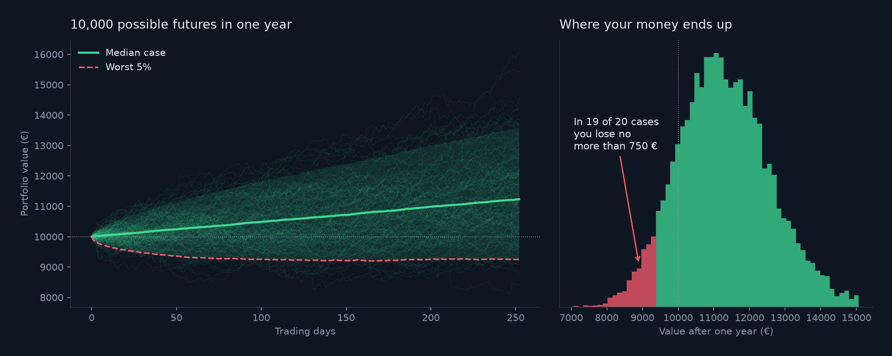

Projects
Monte
How much can you lose on 10,000 euro invested for one year? Nobody can predict the market, so instead of guessing one future, this project builds thousands of possible ones from real market days and looks at how bad the bad ones get.
Try it yourself (the demo is in Italian): type how much you want to invest, split it between five investments with the sliders or a preset, and see how the risk changes.
Portfolio: 40% US stocks, 30% bonds, 10% each Apple, European stocks and gold. Real prices from 2016 to 2025, which was an unusually good period for stocks: do not read these as a forecast.
01 — What it isThe risk, not the
Saying that a portfolio earns about 11% a year is easy, but it hides what matters: in a bad year, how much could I lose? This project answers that question for a portfolio of five investments, and lets you change how the money is split to see how the answer changes.
The technique is called Monte Carlo, after the casino. At the roulette a single spin is impossible to predict, but after thousands of spins the overall picture is stable. Here, a single future is impossible to predict, but if you build thousands of plausible futures, the overall picture tells you what to expect: the typical outcome, and how bad the unlucky ones are.
02 — How it worksFrom prices to
The whole method fits in six steps.
- 1 · Take the real history
- Ten years of daily prices (2,513 trading days, January 2016 to December 2025) of five investments, downloaded from Yahoo Finance: US stocks, Apple, European stocks, US bonds and gold.
- 2 · Turn prices into daily moves
- For each day, how much each price moved compared with the day before, for example +1.2% or -0.8%.
- 3 · Choose how to split the money
- For example 40% US stocks, 30% bonds, 10% each for the rest. These are the sliders in the demo.
- 4 · Draw a real day, many times
- A possible year is built by drawing 252 days (a year of trading) at random from the real history, with replacement, so the same day can come up twice. A whole day is drawn at once, with all five investments together: this keeps the fact that stocks tend to fall on the same days and that real crash days exist.
- 5 · Follow the money through the year
- Each drawn day changes the value of the portfolio, and the changes build on one another. After 252 days you have the value at the end of that one possible year.
- 6 · Repeat 10,000 times and read the results
- You now have 10,000 possible final values. Sorting them shows the typical outcome and how bad the worst ones are.
A drawn day, with invented numbers: US stocks -2%, Apple -3%, European stocks -2.5%, bonds +0.3%, gold +0.5%. With the 40/10/10/30/10 split the portfolio moves by 0.4 × (-2) + 0.1 × (-3) + 0.1 × (-2.5) + 0.3 × 0.3 + 0.1 × 0.5, which is -1.21% that day. The simulation does this 252 times in a row, and then does it all over again 10,000 times.

03 — The dataFive investments that
The five were chosen because they are different. The table shows how each behaved over the ten years; annual figures are computed from the daily ones.
| Investment | Average return a year | Volatility a year | Worst day |
|---|---|---|---|
| US stocks (SPY) | 15.5% | 18.0% | -10.9% |
| Apple (AAPL) | 28.7% | 29.1% | -12.9% |
| European stocks (VGK) | 10.4% | 18.9% | -11.8% |
| US bonds (AGG) | 2.1% | 5.4% | -4.0% |
| Gold (GLD) | 14.6% | 14.8% | -6.4% |
Volatility measures how much the price swings up and down: Apple swings a lot, bonds very little. The three stock investments move together (correlation between 0.56 and 0.81, where 1 means they move identically), while bonds and gold are almost independent from stocks (between 0.03 and 0.16). That is why mixing different investments lowers the risk: when one falls, another often does not.
04 — Reading the riskThree
With 10,000 possible final values, the risk is read from them with three simple numbers.
- VaR 95%
- The loss that is exceeded in only 5% of the simulated years: in 19 years out of 20 you lose no more than this. In the first example, 750 € on 10,000 €.
- Average loss in the worst 5%
- The VaR says where the bad years begin, not how bad they get. This is the average loss inside that unlucky 5%. Also called CVaR.
- Probability of a loss
- The share of simulated years that end below the starting amount.
The four presets of the demo, on 10,000 euro (5,000 simulated years each):
| Portfolio | Median value | Loss in 19 years out of 20 | Average loss in the worst 5% | Probability of a loss |
|---|---|---|---|---|
| Prudent (70% bonds) | 10,546 € | 467 € | 705 € | 19.0% |
| Balanced | 11,252 € | 718 € | 1,132 € | 15.7% |
| Aggressive (no bonds, no gold) | 12,000 € | 1,435 € | 2,073 € | 18.6% |
| Apple only | 12,889 € | 1,948 € | 2,827 € | 19.0% |
The probability of a loss barely changes between portfolios. What changes is how much you lose when it happens, and that is exactly what the average return hides. Apple alone has the highest median value, but also the biggest possible loss.
I checked the numbers of the demo against an independent Python calculation on the same drawn days: the four presets match exactly.
05 — The demoHow to use
The demo is a single page and the whole calculation runs in your browser, with the real prices already inside it. It is in Italian.
- The amount
- Type any amount from 100 € to 10,000,000 €, or pick one of the quick buttons. All the results scale with it.
- The sliders
- One for each investment. Move them to decide how your money is split; the percentages are rescaled to 100% by themselves.
- The presets
- Four ready-made splits: Prudente, Bilanciato, Aggressivo and Solo Apple. A good first try is to click Prudente and then Aggressivo and compare.
- The summary and the four numbers
- A plain sentence tells you the result in words. Below it: median value after a year, loss in 19 years out of 20 (VaR), average loss in the worst 5% and probability of ending the year at a loss. When you change the split, each number also shows how much it moved compared with before.
- The two charts
- On the left the possible years, with the median case in green and the worst 5% in red; on the right where the money ends up, with the worst 5% of the years in red and a dotted line at the amount you started with, so you can see at a glance what is a loss and what a gain.
06 — HonestyWhat this does
- A very good decade
- 2016 to 2025 was unusually strong for stocks (about 15% a year for US stocks and 29% for Apple in this history). The median results are probably optimistic.
- Independent days
- Real markets have long bad periods, like 2008, where losses follow one another. Drawing days independently understates them, so the real risk is likely higher.
- Simplified
- Only five investments, no costs, no taxes, and the portfolio is never rebalanced during the year.
- Few extreme events
- Ten years of data contain few extreme events.
- Not advice
- This is a learning project, not investment advice.
- Python
- pandas
- NumPy
- Monte Carlo
- JavaScript